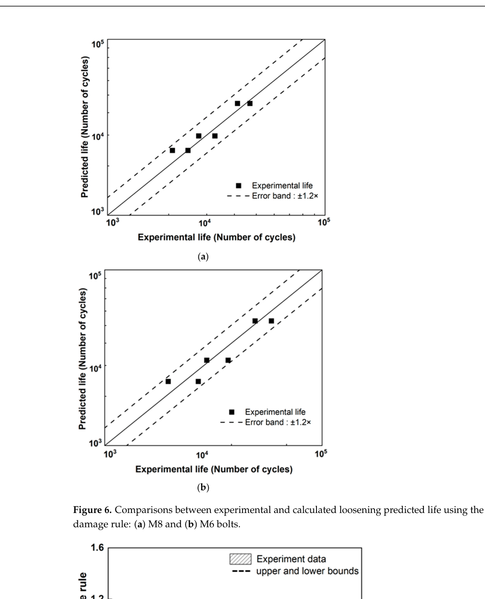

Yang 2023 — estudo de caso— case study
M8, vida-vs-amplitude D-N (N ~ delta^-3.8)M8, D-N life-vs-amplitude (N ~ delta^-3.8)
Figura do artigoPaper figure

Figura(s) originais do artigo (recorte do PDF) — a fonte dos pontos que foram digitalizados.Original figure(s) from the paper (PDF crop) — the source of the digitized points.
Condições do ensaioTest conditions
| ReferênciaReference | Yang, Jeong & Lim (2023). IJPEM 24:825-835 · doi:10.1007/s12541-023-00783-x |
| ParafusoBolt | M6x1.0, M8x1.25 |
| Pré-carga F0Preload F0 | 11–14 kN |
| AmplitudeAmplitude | ±0.15–0.65 mm |
| FrequênciaFrequency | 10 Hz |
| Família / nº de curvasFamily / curves | transverse · 9 |
| MAE medianomedian | 0.015 |
Informações do artigo — aparato, corpo-de-prova, matriz de ensaiosPaper information — apparatus, specimen, test matrix
Yang, Jeong & Lim (2023, IJPEM) — modelo fenomenológico de afrouxamento, M6 + M8
> Escrita em 2026-07-28 SEM o PDF. O paper é paywall (Springer, USD 39,95) e > não está na biblioteca. Esta nota é montada do que está documentado — > curve_library/DEEP_RESEARCH_REPORT.md (linha 23, que cita o companion OA) — mais > a matriz como registrada e caveats medidos por mim no store. Cada seção > declara sua procedência. O que exige o PDF está marcado como FALTA, não > preenchido por inferência. > > Motivo de existir: era a maior fonte sem nota — 9 casos, 7 fora do tripé — > e a ausência da nota impedia a validação de domínio (réplica vs variante > deliberada) que a varredura de impossibilidade exige.
Citação + DOI
Min Yang, Seong-Mo Jeong, Jae-Yong Lim. "A Phenomenological Model for Bolt Loosening Characteristics in Bolted Joints Under Cyclic Loading." *International Journal of Precision Engineering and Manufacturing* 24(5) (2023) 825–835. DOI: 10.1007/s12541-023-00783-x. (Título completo + autores verificados no Crossref em 2026-08-01 — a versão anterior desta nota, escrita sem o PDF, trazia o título truncado "…" e as iniciais ERRADAS "Y. Yang, S. Jeong, J. Lim" herdadas do research report.)
- Acesso: paywall Springer. **Decisão do professor (2026-08-01): não vamos
obter o PDF** — as funções dele foram substituídas onde possível (ver abaixo).
- Conteúdo relevante: Figs. 1–9 (F/F₀ vs N em várias amplitudes, M6 e M8),
uma master curve fenomenológica e uma lei de potência S-N.
- Companion OA AGORA NA BIBLIOTECA (baixado 2026-08-01, via browser+PoW do
PMC): pdfs_open_access/yang2025_materials_M8.pdf — Yang, M.; Jeong, S.-M.; Hong, S.-G.; Lim, J.-Y. (4 autores; resumos anteriores omitiam Hong), "Prediction of Bolt Loosening Life: A Practical Approach Considering Variable Amplitude Loading and Multi-Bolted Structures", *Materials* 18(5):1069, 2025, DOI 10.3390/ma18051069. O que ele tem e o que NÃO tem (verificado no PDF, não em resumo): Fig. 1 confirma a máquina = Junker tester (reimpressa do IJPEM [21]); Tabela 1 = condições (fonte das correções de input de 2026-07-28); Tabela 2 = 12 ensaios VAL dois-blocos M8+M6 (vidas nas Figs. 6–7, scatter ±1,2×); Tabelas 4–5 + Fig. 9 = estrutura multi-parafuso M8 (3 casos × 2 réplicas, amplitude MEDIDA por parafuso) com vidas num scatter previsto-vs-medido; Fig. 10 = fotos. ⚠️ NENHUMA curva F/F₀-vs-N é publicada no companion — um resumo de WebFetch afirmou que a Fig. 9 tinha curvas e estava ERRADO (conferido na página renderizada, 2026-08-01). As vidas com réplica ficam como âncora de VIDA (instrumento classe N₉₅/D-N), não como curvas do censo.
Corpo-de-prova e condições (procedência: DEEP_RESEARCH_REPORT §linha 23)
| item | valor documentado |
|---|---|
| parafusos | M6×1,0 e M8×1,25 |
| amplitude transversal | 0,18 – 0,65 mm (vários graus) |
| frequência | 5 Hz |
| pré-carga | ~11 kN (M6), ~14,3 kN (M8) |
| ciclos | ~1e4 – 1e5 |
⚠ Dois desacordos entre o documentado e o REGISTRADO — ✅ RESOLVIDOS contra o companion OA (2026-07-28, mesma noite)
Medido no registry + store 4f5bedfbace4; resolvido em 2026-07-28 lendo a Table 1 do companion OA PMC11901137 (Yang et al. 2025, mesmo grupo), que declara *"initial clamping force, frequency and sampling rate identical to those used in a previous study [= o 2023 IJPEM]"*:
| input | doc. antigo (DEEP_RESEARCH) | registrado | OA Table 1 (adotado) |
|---|---|---|---|
| frequência | 5 Hz | 12,5 Hz (default herdado) | 10 Hz — os DOIS registros anteriores estavam errados |
| pré-carga M6 | ~11 kN | 8 500 N | 11 kN — registro estava errado |
| pré-carga M8 | ~14,3 kN | 14 300 N | 14,3 kN — confere |
Impacto MEDIDO antes de aplicar (2026-07-28): freq 12,5→10 é inerte
(|Δ|≤0,001 — modo deslocamento, o relógio é o ciclo; só creep/fretting leem freq). F₀ M6 8,5→11 kN é misto: 0_30 melhora (0,129/0,420→0,120/0,220), 0_50 piora (0,156/0,274→0,239/0,410 — e 0_50 já é DATA-LIMITED provada), 0_15 segue passando. Nenhuma curva muda de status no tripé ⇒ correção de verdade-de-input, sem efeito na meta. Aplicada em core/validation_cases.py com esta procedência (a degradação do 0_50 é informação de forma — a sensibilidade a F₀ do modelo —, não motivo para manter um input errado).
Matriz de ensaios COMO REGISTRADA (procedência: registry + store)
pts = pontos no CSV extraído · salto = mediana de |Δ(F/F₀)| entre pontos consecutivos do dado.
| caso | amp (mm) | F₀ (N) | pts | salto med. | MAE | res.máx | tripé |
|---|---|---|---|---|---|---|---|
…0_15_mm_below_threshold__7 | 0,15 | 8 500 | 4 | 0,015 | 0,007 | 0,015 | ✅ |
…0_18_mm_below_threshold__1 | 0,18 | 14 300 | 5 | 0,018 | 0,008 | 0,017 | ✅ |
…0_25_mm__2 | 0,25 | 14 300 | 7 | 0,080 | 0,167 | 0,427 | ✗ |
…0_30_mm__8 | 0,30 | 8 500 | 7 | 0,170 | 0,129 | 0,420 | ✗ |
…0_35_mm__3 | 0,35 | 14 300 | 8 | 0,120 | 0,179 | 0,560 | ✗ |
…0_45_mm__4 | 0,45 | 14 300 | 7 | 0,140 | 0,104 | 0,360 | ✗ |
…0_50_mm__9 | 0,50 | 8 500 | 6 | 0,220 | 0,156 | 0,274 | ✗ |
…0_55_mm__5 | 0,55 | 14 300 | 6 | 0,180 | 0,119 | 0,342 | ✗ |
…0_65_mm__6 | 0,65 | 14 300 | 6 | 0,200 | 0,082 | 0,160 | ✗ |
Não há réplicas nesta fonte: cada curva é uma amplitude distinta, e a amplitude é a variável varrida do paper. Portanto o argumento de impossibilidade por réplica não se aplica aqui — era exatamente o que a nota faltante impedia de concluir.
Caveats de extração (procedência: MEDIDO neste store, 2026-07-28)
- Os CSVs vêm de
extracted_csv/, não dedigitized_csv/— são pontos de
tabela/master-curve, não traçado de figura. Daí a contagem baixíssima: 4 a 8 pontos por curva.
- A resolução do dado é mais grossa que a meta. O salto mediano entre pontos
consecutivos vale 0,08 – 0,22 em F/F₀, contra uma tolerância de 0,10. Em 6 das 7 curvas que falham, o passo do próprio dado é ≥ a tolerância inteira: entre dois pontos medidos o dado não restringe a curva a menos de ~0,2, então parte do resíduo mede o espaçamento da amostragem, não o modelo.
- As duas curvas que passam são justamente as de salto ~0,015 (abaixo do
limiar, curvas quase planas) — consistente com a leitura acima.
- Uma delas já é exceção provada: a de 0,50 mm foi classificada DATA-LIMITED e
a prova está em [data_limited_proof_2026-07-28.md](../../../../New_Theory/data_limited_proof_2026-07-28.md) §2.
Status na campanha
- A fonte é descrita como tri-falsificada ("nenhuma constante move") e a forma
candidata na fila é bifurcação de limiar — 7 curvas.
- Hipótese que esta nota levanta e não testa: dado o item acima, parte do que
está catalogado como FORM-LIMITED nesta fonte pode ser DATA-LIMITED. O classificador marcou só a curva de 0,50 mm como resolução grossa, mas o salto mediano ≥ 0,10 aparece em 6 das 7. Testar isso exige critério declarado antes — não fazer post-hoc.
Mapeamento V2 (procedência: DEEP_RESEARCH_REPORT)
Alvos indicados pela rodada de deep-research: k_emb_scale, k_wear_scale_tr, slip_onset_W, Phi_tr_correction, k_loose_scale_tr, surface_damage, e cross-condition (a master curve multi-amplitude é o valor real da fonte).
> Tradução para o vocabulário atual: os *_scale acima são da camada de 9 > tuners removida no Estágio B (2026-07-09). Hoje os alvos equivalentes são as > constantes físicas emb_depth, k_wear_spec, slip_onset_W, tr_loose_gain, > c_D/k_dmg_wear.
FALTA (exigia o PDF — status 2026-08-01: PDF declarado INACESSÍVEL pelo professor)
- Descrição do aparato: ~~máquina (Junker-type?)~~ ✅ **Junker tester
CONFIRMADO** (companion Fig. 1, reimpressa do próprio IJPEM); norma seguida, fixação, instrumentação de pré-carga e material das placas seguem FALTA (o companion usa placas SCM440 na SUA estrutura multi-parafuso — não transfere automaticamente ao rig single-bolt do IJPEM).
- Matriz completa do paper: quais figuras correspondem a quais amplitudes, e
se há repetições por espécime (⇒ se houver, o argumento de impossibilidade por réplica passa a se aplicar).
- Caveats de figura: eixos log, pontos ilegíveis, onde a curva termina.
- ~~Resolver os dois desacordos de input (frequência, pré-carga M6)~~
✅ JÁ RESOLVIDO — ver a seção "Dois desacordos" acima (2026-07-28, contra o companion OA): freq = 10 Hz e F0(M6) = 11 kN, e os dois valores já estão no store (conferido caso a caso em 2026-07-29, no premeasure do prereg specs/2026-07-29-yang2023ijpem-scrit-prereg.md). Esta linha do FALTA ficou vencida quando a seção acima foi escrita, na mesma noite. Mantida riscada em vez de apagada porque a lição é do §4.43: item de pendência que não é retirado ao ser resolvido volta a ser lido como pendência — foi lido assim hoje.
- ~~Resolver os desacordos~~ (item original, para rastreio) contra o
companion OA ou o PDF.
⚠️ CONTRADIÇÃO DE ORDEM DE GRANDEZA NO EIXO N (medida 2026-08-06, campanha FAXINA-E-ANATOMIA)
As 9 curvas desta fonte travam TODO o afrouxamento em N ≤ 2000 ciclos. Três fontes independentes dizem que as vidas reais são 1–2 ordens de grandeza maiores:
1. Companion OA (pdfs_open_access/yang2025_materials_M8.pdf, lido do PDF, não de resumo): a Table 5 mede amplitudes 0,3/0,4/0,5 mm no parafuso vulnerável (M8, 14,3 kN, 10 Hz) com vidas ~1e4–1e5 ciclos — e com critério ATÉ MAIS estrito (20 % de perda) — afirmando predição ±1,2× com a MESMA curva D-N do IJPEM. A nossa tabela D-N dá 1463 / 340 / 110 ciclos nessas amplitudes (a 90 % de perda). 2. DEEP_RESEARCH_REPORT.md linha 23, sobre o próprio IJPEM: "Ciclos ~1e4–1e5". 3. Inconsistências internas do doc-tabela: a lei de potência declarada (C=10,5 / m=3,8) reproduz a própria tabela D-N só a 0,58–2,16×, e a master curve contradiz a definição de N_L em 30 % (F/F₀=0,10 cai em N/N_L=0,70).
Leitura: os y das 9 curvas são múltiplos de 0,005–0,02 e os x pertencem todos a {0,2,5,10,20,50,100,200,500,1000,2000} — isto é TABELA SINTETIZADA em grade grossa, reconstruída de um paper que a deep-research nunca abriu (paywall). A suspeita é de compressão do eixo N, direção: nossas curvas curtas demais.
Consequência de âncora (rebaixamento): o bracket de limiar 0,18 < δ_th < 0,25 mm segue VÁLIDO (vem da matriz de ensaios — qual amplitude solta e qual não solta — não do eixo N). Mas nada no eixo N desta fonte (taxas, joelhos, vidas, N_L) deve ancorar forma ou relógio até o eixo ser adjudicado. O instrumento natural de adjudicação são as 18 vidas com réplica do companion (já na fila de decisões como âncora de vida).
Auditoria de input da mesma passada (2026-08-06): freq 10 Hz e F₀ (14,3 kN M8 / 11 kN M6) fechados AO DÍGITO contra a Table 1 do companion — os 2 desacordos históricos desta nota estão RESOLVIDOS. Duas anotações novas: (i) preload_percent_yield do M6 no registry diz 45 e a conta dá 58,2 % (11 kN / 20,1 mm² / 940 MPa) — INERTE na métrica (consumidores: só gui_bridge/display), higiene cosmética pendente; (ii) âncora NÃO consumida: Table 3 do companion dá kx = 12 550 N/mm = 1,255e7 N/m (Timoshenko com cisalhamento, M8×65) — o k_tr efetivo do engine nesta fonte é ~3,06e7 (2,4× mais rígido), compensado hoje pelo delta_free=180 µm adotado. Anotada para o dia em que uma forma de regime intermediário existir; destravar só a cinemática foi medido 2× e dá runaway 0,000 contra dado 0,520 (bimodalidade).
Modelo vs dadoModel vs data
Cada card = uma curva digitalizada deste estudo: a linha é a previsão do modelo (config adotada, do store canônico) e os pontos são o dado medido; o badge traz o MAE.Each card = one digitized curve from this study: the line is the model prediction (adopted config, from the canonical store) and the dots are the measured data; the badge shows the MAE.
ReprodutibilidadeReproducibility
Cada card tem ↓ CSV (modelo + dado da curva). Os CSVs digitalizados originais ficam em Models/CALIBRATION_AND_VALIDATION/curve_library/digitized_csv/; a curva do modelo vem do store canônico (config adotada por fonte). Para reproduzir localmente:Each card has ↓ CSV (curve model + data). The original digitized CSVs live in Models/CALIBRATION_AND_VALIDATION/curve_library/digitized_csv/; the model curve comes from the canonical store (adopted per-source config). To reproduce locally:
Ver também o guia de uso do programa e a metodologia.See also the program usage guide and the methodology.